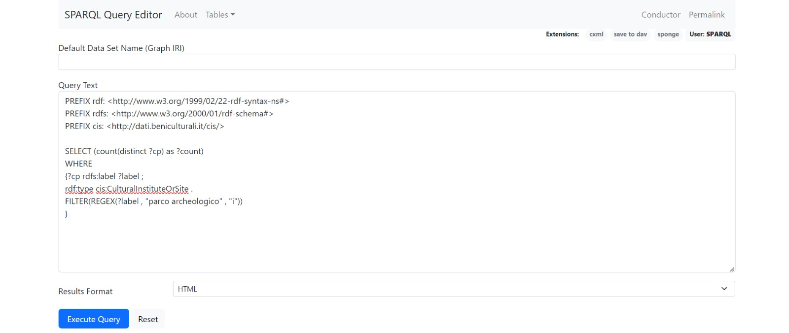

We then understood that these results referred to the insediamenti that are located in the Archaeological Parks, so we run a different query, looking under the class "Cultural Institute Or Site" to obtain more results:
SELECT (count(distinct ?cp) as ?count)
WHERE
{?cp rdfs:label ?label ;
rdf:type cis:CulturalInstituteOrSite .
FILTER(REGEX(?label , "parco archeologico" , "i"))
}

To prove that the results found in the class "Cultural Institute or Site" were less detailed than those in the class "Cultural Property", we tried to
run a new query in both classes. The aim of these query was to find the Archaeological Parks in the Italian regions of Calabria and Campania. The first query gave us some results:
This proved that the results of the second query are less detailed.
Furthermore, thanks to our queries, we observed some missing conncections between the following elements:
We found that, in this case, this insediamento is placed in the Parco Archeologico delle Terme di Baia:
Similarly, we also found out the missing relationship between:
And
Therefore, what we would like to propose in this case is to link them thanks to the predicate "a-loc:isCulturalInstituteOrSiteOf" in the triple .
If you want to learn more about the new triples we proposed,
Consulting LLMs such as ChatGPT, we asked what was the relevant information to look for when studying archaeological sites:
This helped us finding out that the page of the insediamento could be improved: for example, ChatGPT proposed us to also add the chronological dating, conservation, preservation and the materials used in the construction of the settlement.
Taking advantage of this, we created new triples based on the information provided by ChatGPT.
Concerning the chronological dating, here we propose an example of a new triple with the predicate "tiapit:TimeInterval":
If you want to learn more about the new triples we proposed,
ChatGPT also proposed to insert information about the conservation status of the archeological park under examination and about the latest interventions. While the LLMs were capable of providing some general knowledge, we are aware that field specialists should take care of such important data.
For this reason, we decided to propose only the labels that could be used to include such information for every insediamento:
To provide a reasoned estimate of the conservation status of the Parco Archeologico di Ercolano and of the proposed intervention throughout the years of the Parco archeologico delle Terme di Baia we used and tasted LLMs. After testing all fours, we noticed
that Gemini and Llama were the most accurate, while Mistral fell short in comparison with the other when it came to providing clear and concise information. Moreover, increasing the maximum number of tokens did not really make a difference in the conciseness of the answer
provided as it stopped halfway to respect such restriction.
For the proposed intervention part we struggled to come up with any reliable information (Llama hallucinated even with a low temperature), and since only experts can provide detailed information regarding the site we can only propose to add this label.
For the conservation status, with a few-shot prompt (disclosing the various types of conversation status) LLMs were able to rate the archeological park status.
First, we prompted Llama:
Then, Gemini:
Regarding the materials, for example with pozzolana, we would like to introduce another new triple, with the predicate "Arco-dd:hasMaterial" .
In this case, ChatGPT has supported us in the research of the materials:
When proposed this zero-shot prompt, the answer we received was:
Then, we proceeded to ask the relationship between the materials used and the Archaeological Parks:
Finally, we asked ChatGPT to transform the information in RDF:
This above is an example of generated knowledge.
Then, we wanted to go into the details of the codes that ArCo assigned to each Italian region, in order to add geographical information about the archaeological sites.
In order to achieve this, we first promped Mixtral:
Clearly, this answer is an example of misinterpretation; so, we tried to provide Mixtral with some more context:
We tried to ask the same to other LLMs, namely Llama, Gemini and ChatGPT but without getting any better answer:
After these attempts, we decided to change our prompting technique and use the few shots technique.
These were the answers we got from:
Mistral:
Llama:
Gemini:
ChatGPT:
We observed that ChatGPT was the only LLM to correctly answer us, as we can see from the official ISTAT list provided by the Agenzia delle Dogane e dei Monopoli website
We also wanted to test the chain of thoughts technique:
Finally, after all this work, we found ourselves ready to draw our conclusions,